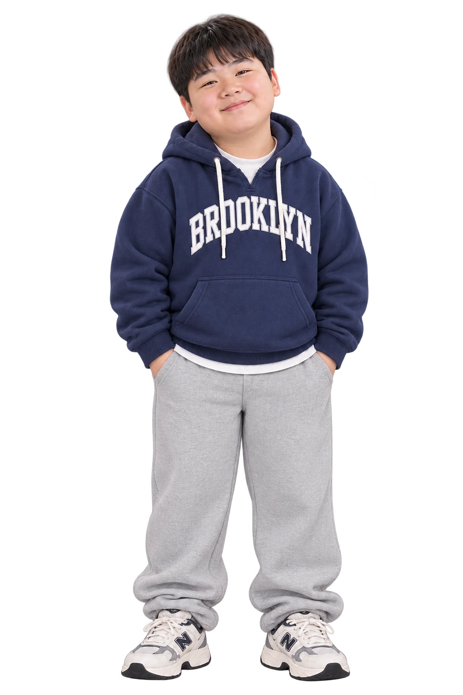

교실 곳곳에 숨겨진 QR 단서를 찾아 감염 위험 경로를 추리하자!
민준
서연
지우
유나
도윤

현우
하린
🔎 조사하러 가기
단서를 관찰하고 발생 시각과 사실을 수사수첩에 기록하세요.
ⓘ 저작권 안내
×
콘텐츠 저작권 및 이용 안내
본 웹앱은 초등학교 보건교육을 목적으로
보건교사가 기획·제작한 체험형 교육 콘텐츠입니다.
⊘
제작자의 사전 허락 없이 본 콘텐츠와 소스코드를 무단 복제·수정·재배포하거나 상업적으로 이용하는 것을 금지합니다.
© 2026 JH Studio. All rights reserved.